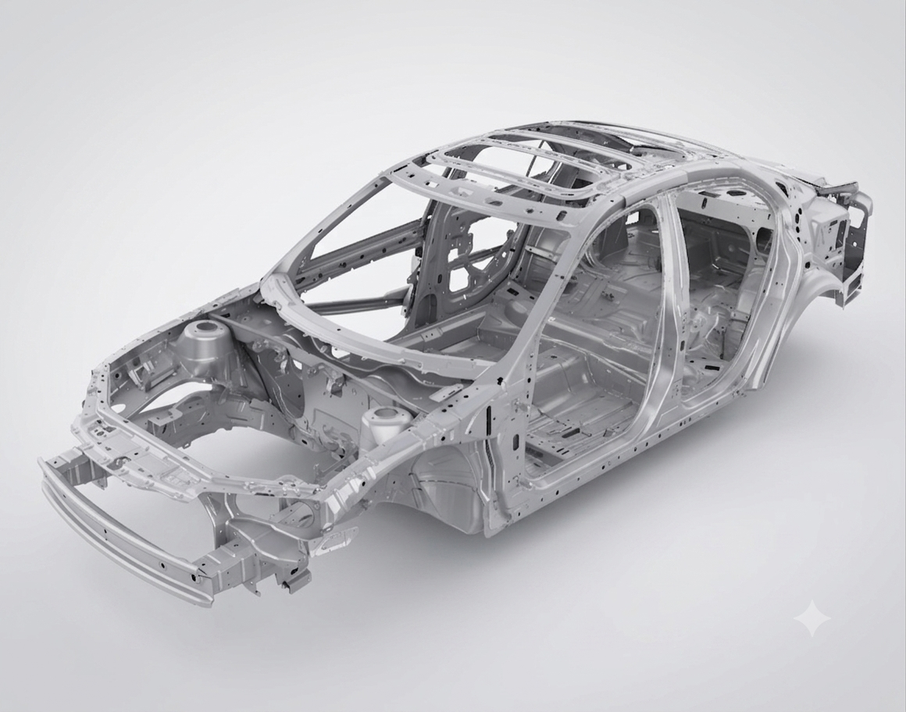

Plasticity Analysis of an Automotive Chassis Rail
Finite element study of a car chassis rail's plastic behavior during a pole-impact crash scenario.

Context
Finite element analysis project studying the crash behavior of a car chassis rail (side member) against a pole impact, using Abaqus to assess elastic and plastic response, potential fracture, and optimal material selection.
Skills Acquired
· Finite element modeling and simulation (FEA)
· Mesh convergence studies
· Elastic and plastic material behavior analysis
· Crash/impact structural analysis
· Material selection based on mechanical performance
Software Used
· Abaqus
· Excel for data analysis